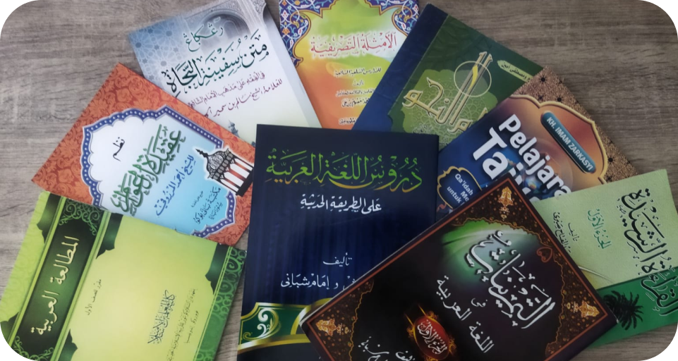
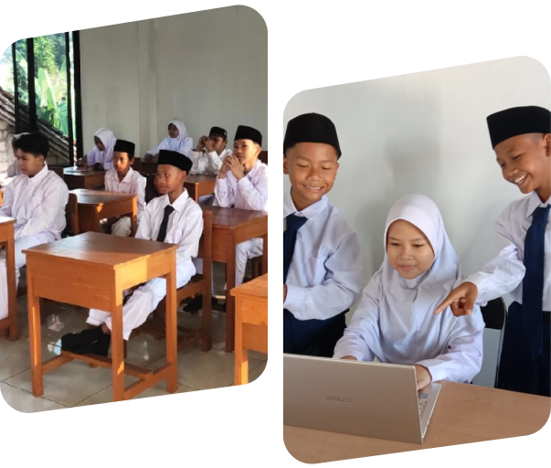

01 · Bahasa Arab & Inggris
Pendalaman Dwibahasa Aktif Internasional
- Mahkamah bahasa dan percakapan aktif setiap hari.
- Literasi kitab Arab dan penguasaan bahasa Inggris.
- Pelatihan pidato dan kepemimpinan santri.
Kurikulum Terpadu
Integrasi keilmuan Islam, penguasaan bahasa internasional, dan teknologi modern untuk membentuk generasi santri yang siap menghadapi tantangan zaman.
01 · Bahasa Arab & Inggris

02 · Dirasah Ilmiyah

03 · Teknologi & Komputer

Mengenal lebih dekat
Pondok Pesantren Daarul Azmi adalah Lembaga Pendidikan Islam yang memiliki visi dan misi dalam pembentukan akhlak dan mental terhadap generasi penerus dengan pembekalan pengajaran yang terpadu, yaitu Pendidikan Islam yang berlandaskan pada Ahlussunnah wal Jamaah dengan asas pondasi Al-Qur'an dan Sunnah, Ijma dan Qiyas, dan berpedoman kepada nilai-nilai Pancasila Indonesia, dan Undang-Undang Dasar 1945.
SelengkapnyaKeunggulan kami
Sebagai salah satu pesantren terbaik di Jawa Barat, kami berkomitmen melahirkan generasi yang tidak hanya kokoh dalam aqidah, tetapi juga siap menghadapi tantangan era digital.
Pembelajaran kitab kuning mendalam yang dipadukan dengan program akselerasi tahfidz Al-Qur'an dengan metode yang mutakhir dan menyenangkan bagi santri.
Bukan sekadar mengaji, santri dibekali kemampuan literasi digital, dasar pemrograman, hingga manajemen konten kreatif untuk menjawab tantangan zaman.
Terletak di wilayah yang sejuk dan tenang di Jawa Barat, menciptakan atmosfer belajar dan menghafal yang fokus, aman, nyaman, dan jauh dari kebisingan kota.
Bimbingan langsung oleh para ustadz dan ustadzah lulusan perguruan tinggi Islam ternama yang berdedikasi tinggi dan memiliki sanad keilmuan yang jelas.
Penerapan disiplin harian melalui pembiasaan ibadah sunnah, adab sehari-hari, kepemimpinan, dan kemandirian demi membentuk kepribadian mulia.
Didukung oleh asrama yang bersih, ruang kelas representatif, laboratorium komputer, sarana olahraga, serta lingkungan penunjang kesehatan santri.

Khadimul Ma'had
Pimpinan Pondok Pesantren
Bernama lengkap (Al-Ustadz Kiyai) Ibnu Mubarok, lahir pada tanggal 17 Desember 1985 di Kp. Rawalembang, yang mana menjadi tempat berdirinya juga Pondok Pesantren Daarul Azmi yang dipimpinnya saat ini. Di bawah asuhan beliau, pesantren terus konsisten melahirkan generasi berwawasan luas.
“Membimbing santri bukan sekadar mentransfer ilmu kitab, melainkan menanamkan benteng akhlak dan ketahanan mental di era disrupsi digital.”Profile Pimpinan

Penerimaan Santri Baru
Pesantren Daarul Azmi merupakan pesantren terbaik di Jawa Barat, khususnya di Kecamatan Gunungsindur, dengan meluluskan santri yang kompeten dan menjadi ustadz terkemuka untuk mendakwahkan Islam di berbagai pelosok nusantara.
Hubungi via WhatsAppWarta & kabar
Momen kebersamaan
Galeri multimedia